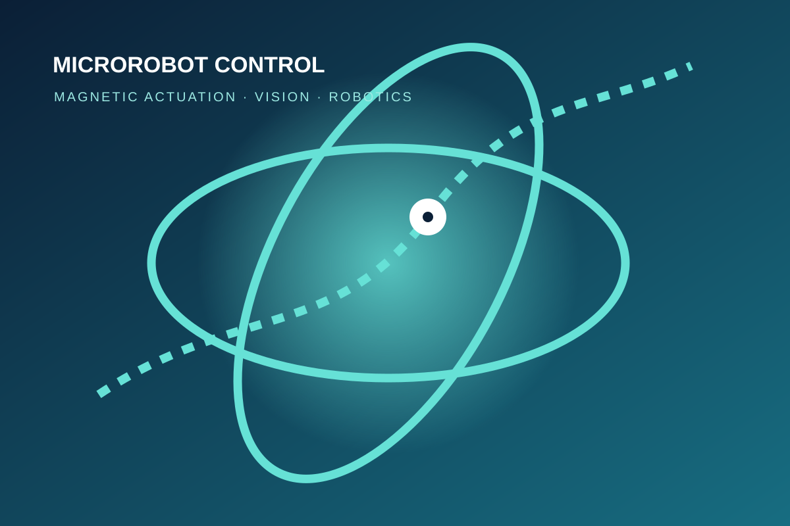
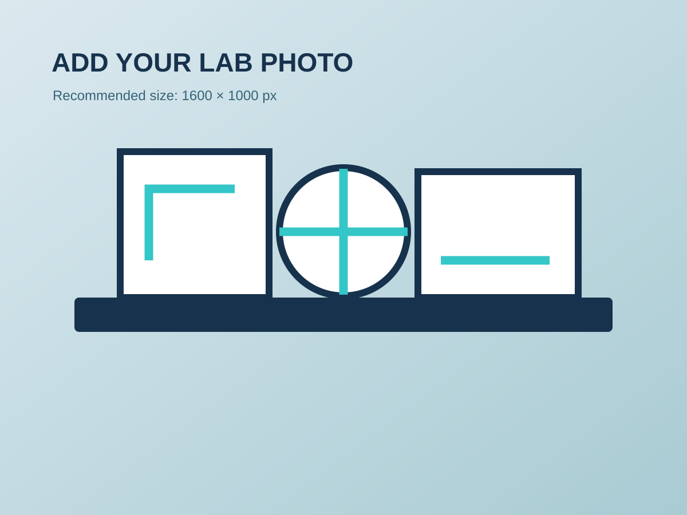

3D Motion Control of Microrobots
Developing a coil-driven microrobot platform for dental applications, combining robotic positioning, magnetic actuation, and visual feedback.
Explore more: 3D Motion Control of MicrorobotsMechanical Engineering · Microrobotics · Control
Welcome to my website!
I am Guanlin Qu, an M.S.E. student in Mechanical Engineering and Applied Mechanics at the University of Pennsylvania. My work connects microrobotics, feedback control, vision, and biomedical engineering.
Research experience
Selected projects, ordered from newest to oldest by start date. Explore each project for its background, my contributions, and visual documentation.

Developing a coil-driven microrobot platform for dental applications, combining robotic positioning, magnetic actuation, and visual feedback.
Explore more: 3D Motion Control of Microrobots
Designed an IMU-based feedback system for a pneumatic simulator chair, integrating PID control, current-control electronics, and custom fixtures.
Explore more: Flight Simulator Chair
Co-designed a portable rehabilitation device and game interface to help stroke patients practice guided thumb movement.
Explore more: Thumb Rehabilitation Robot
Developed PLC and Arduino PID control for hydraulic fixtures, connecting pressure feedback with motor and clamping-force regulation.
Explore more: Hydraulic Vibration DampingSelected coursework
These courses span control, robotics, microfabrication, sensing, and applied mathematics.
MEAM 5170
MEAM 5180
ESE 5290
ENM 5100
Photo & video gallery
This gallery is ready for lab photographs, simulation recordings, and experiment videos. Replace the placeholder assets without changing the layout.



Education
M.S.E. in Mechanical Engineering and Applied Mechanics · GPA 3.88/4.0
B.S. in Mechanical Engineering · GPA 3.95/4.0
B.Eng. in Mechanical Design, Manufacturing and Automation · GPA 88.7/100
Let’s connect